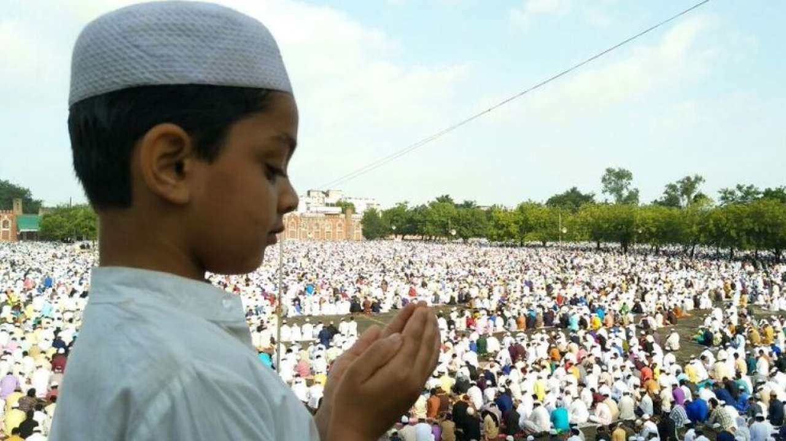

Bakri Eid, or the festival of sacrifice, or Eid Al-Adha is celebrated the world over to commemorate the obedience of Ibrahim. The celebrations, which begins today and will last until Sunday, also marks the end of the Haj pilgrimage where Muslims make their once-in-a-lifetime trip to Mecca. Muslims in India will sacrifice goats to represent Ibrahims commitment to God, where Allah came to Ibrahim in a dream and asked him to sacrifice his son Isma’il as an act of obedience. As he was about to sacrifice Isma’il, Allah stopped him and gave him a lamb instead.
Today, the festival is celebrated by sacrificing male goat. The animal is divided in three portions and these are then distributed - the first is given to relatives and friends, the second to the poor, and the final part is for the famiy. People greet each other by saying, "Eid Mubarak!" Some of the dishes made on this festival are mutton biryani, kheema, korma, bhuni kaleji, and sheer korma.